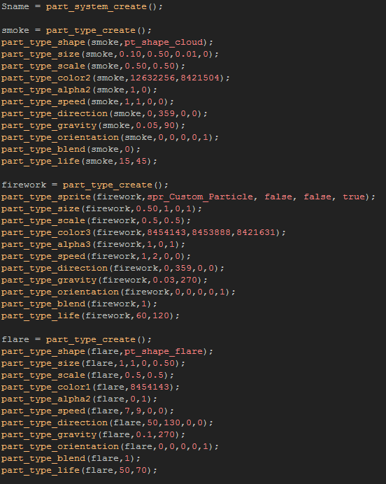

Tutorial
Page 11 of 12
Complex Particle Effects
This last button will be used to create the "ultimate" firework! Here we are going to put all the previous things that you have learned together and use a couple of extra advanced functions to create an effect
unlike any of the previous ones.
To start with, duplicate the first button object and assign the new one the sprite "spr_Button_Complex". Open up the create event and add in the following code:

Three particles? Yes, because we are going to use one as a "carrier" for the other two, as we are going to use two very special functions that can add a lot to your effects (or cause them to go horribly wrong). Add
the following into the create event too:
These two functions can be used to tell a particle to create another particle every step that it exists, and to create another particle when it's lifetime is over. So, in the context of our new firework, these lines of
code tell our "flare" particle to generate 10 "smoke" particles every step and then, at the end of it's life, it will create 100 "firework" particles.
NOTE : These functions can quickly create many thousands of particles or even an infinite loop of particle creation which can slow down and crash your game, so take great care with these!
It is worth noting too that the "firework" particle uses a custom sprite for the particle and not one of the built in constants. This is an incredibly useful function that permits you to use your own images, to animate
particles or to have random images for each particle (as is the case here).
We also need to create an emitter for this particle which we will use to create the "flare" particle in the step event. So, add this code into the event after everything else:
We now need to open up the step event and have it create this particle with the following code:
Then add in a Room End event for the clean up with this code:
You can now add this button into your room and check out the final effect! Maybe a bit overdown, but it certainly is spectacular...
Click on the Next button to go to the next page of the tutorial.